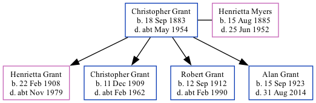

Christopher James Grant 1883 - c1954
[ Home ] | [ Calendar ] | [ Surnames Index ] | [ Family History ]Christopher Grant was born in South Shields, Tyne and Wear, England on Sep 18, 18831,2,3 and married Henrietta Myers (with whom he had 4 children: Henrietta Briscoe Nicholson, Christopher James, Robert Myers and Alan) in Tynemouth, Tyne and Wear, England around Aug 19064.
Throughout his life, he lived at 96 Elsdon Street in Tynemouth on Apr 2, 19115; and at 4 Coast Road in Tynemouth on Sep 29, 19391.
He died c. May 1954 in Tynemouth3.
Children
- Henrietta Briscoe Nicholson was born on Feb 22, 1908
- Christopher James was born on Dec 11, 1909
- Robert Myers was born on Sep 12, 1912
- Alan was born on Sep 15, 1923
Citations
- 1939 Register - Findmypast (was the head of the household)
- England & Wales births 1837-2006 - Findmypast
- England & Wales deaths 1837-2007 - Findmypast
- England & Wales Marriages 1837-2005 - Findmypast
- 1911 Census for England & Wales - Findmypast (was age 27 and the head of the household)
Media
1939 Register - TNA/R39/2952/2952C/014/18
England & Wales marriages 1837-2005 - BMD/M/1906/3/AZ/000159/179
England & Wales deaths 1837-2007 - BMD/D/1954/2/AZ/000372/080
England & Wales births 1837-2006 - BMD/B/1883/4/AZ/000218/060
1911 Census for England & Wales - GBC/1911/RG14/30762/0399/1
Family Tree
Generated by ged2site. Last updated on Nov 13, 2024